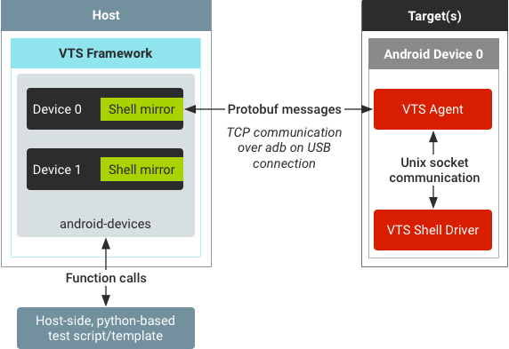

During VTS testing, shell commands are used to execute a target-side test
binary, to get/set properties, environment variables, and system information,
and to start/stop the Android framework. You can execute VTS device shell
commands using the adb shell command or the VTS shell driver
running on the device (recommended).
Tests that require shutting down the USB port or rebooting the device during
testing must use ADB shell as the VTS shell driver is unavailable without a
persistent USB connection. You can invoke ADB shell from the
AndroidDevice object in the Python test script. Examples:
self.device = self.android_devices[0]
result = self.device.adb.shell(‘ls')
The VTS shell driver is an agent binary that runs on the device and executes
shell commands. By default, VTS uses the shell driver if the driver is running
on device because this method has less latency than using the adb
shell command.

The VTS framework supports multi-device testing where each Android device is represented as an AndroidDevice object in base runner. By default, VTS framework pushes VTS agent and VTS shell driver binaries to each Android device and establishes TCP connections to the VTS agents on those devices.
To execute a shell command, the host-side Python script makes a function call to the ShellMirror object inside AndroidDevice object. The ShellMirror object packs the shell command texts into a protobuf message and sends it (via the TCP channel) to the VTS agent on the Android device. The agent running on device then forwards the shell command to VTS shell driver via the Unix socket.
When the VTS shell driver receives a shell command, it executes the command
via nohup on
the device shell to prevent hanging. Stdout, stderr, and return code are then
retrieved from nohup and sent back to VTS agent. Finally, the agent
replies to the host by wrapping the command result(s) into a
protobuf message.
The advantages of using the VTS shell driver instead of adb
shell include:
nohup to execute commands on default setting. As VTS tests are
mostly lower level HAL and kernel tests, nohup ensures shell
commands do not hang during execution.adb shell command
caches some results (such as listing files in a directory) it has a connection
overhead when performing tasks such as executing a test binary. VTS shell driver
maintains an active connection throughout the test so the only overhead is USB
communication. In our testing, using VTS shell driver to execute a command with
100 calls to an empty gtest binary is about 20 percent faster than using
adb shell; the actual difference is larger since VTS shell
communication has extensive logging.The disadvantages of using the VTS shell driver instead of adb
shell include:
adb shell, the result and state of the command before disconnection
would be unknown.Examples of using shell commands in a VTS host-side Python test script:
self.device = self.android_devices[0]
self.shell = self.device.shell
results = self.shell.Execute(‘ls')
results = self.shell.Execute([‘cd /data/local/tmp', ‘ls'])
The return object from shell command execution is a dictionary containing the
keys stdouts, stderrs, and return_codes.
Regardless of whether the shell command is provided as a single string or a list
of command strings, each value of the result dictionary is always a list.
To verify the return code of a list of commands, the test script must check the indices. Example:
asserts.assertFalse(any(results[‘return_codes']), ‘some command failed.')
Alternatively, the script can check each command index individually. Example:
asserts.assertEqual(results[‘return_codes'][0], 0, ‘first command failed')
asserts.assertEqual(results[‘return_codes'][1], 0, ‘second command failed')